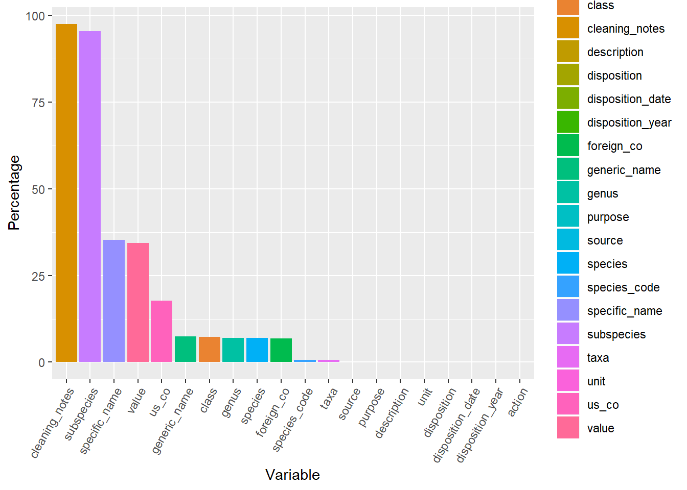
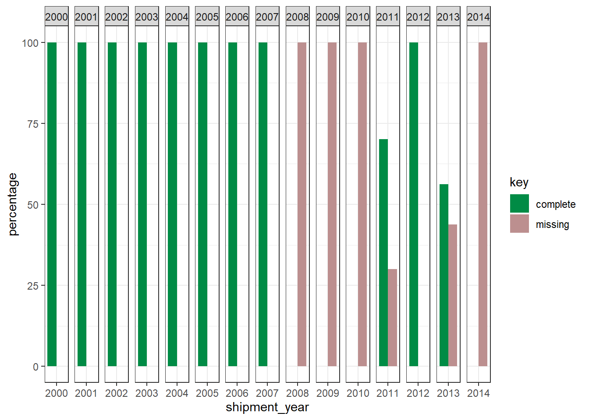

Chapter 2 Data quality & cleaning
2.1 Missing values
Only four variables have more than 30% missing values. Most of them are below 10%
# Are there missing values?
missing_values <- data %>%
gather(key = "key", value = "val") %>%
mutate(is.missing = is.na(val)) %>%
group_by(key, is.missing) %>%
summarise(num.missing = n()/nrow(data) *100) %>%
filter(is.missing==T) %>%
select(-is.missing) %>%
arrange(desc(num.missing))
ggplot(missing_values, aes(x=reorder(key, -num.missing), y=num.missing, fill=key)) +
geom_bar(stat="identity") +
theme(axis.text.x = element_text(angle=60, hjust=1)) +
labs(y = "Percentage", x="Variable") +
rm(missing_values)
2.1.1 Missing values in “value” year over year
If we have a look at the “value” variable (dollars), we can notice that there isn’t enough information about it in the data produced between 2008-2011 and 2013-2014. Specifically, the years 2008, 2009, 2010 and 2014 only contain missing values
missing_value<- data %>%
select(shipment_year, value) %>%
group_by(shipment_year) %>%
summarise(missing = sum(is.na(value)/n())*100,
complete= round(100 - sum(is.na(value)/n())*100,2)) %>%
gather("key", "percentage", missing, complete)
ggplot(data=missing_value, aes(x=shipment_year, y=percentage, fill=key)) +
geom_bar(position = "dodge", stat = "identity") +
theme_bw() + facet_grid(~shipment_year,scales = "free_x") + scale_fill_manual(values=c("springgreen4", "rosybrown"))
2.2 Excluding plants and microorganisms
We classified 98.93 % of data by kingdoms using the class, taxa and genus columns. This way, we excluded those elements belonging to fungi, plantae, bacteria, chromista and unspecified kingdoms.
Bacterias: Gammaproteobacteria
Chromista: Phaeophyceae
Plantae: Cycadopsida, Liliopsida, Magnoliopsida, Pinopsida, Polypodiopsida
Fungi: Agaricomycetes, Chytridiomycetes
Animalia: Actinopterygii, Amphibia, Anthozoa, Arachnida, Ascidiacea, Asteroidea, Aves, Bivalvia, Branchiopoda, Calcarea, Cephalaspidomorphi, Cephalopoda, Cestoda, Chilopoda, Clitellata, Cubozoa, Demospongiae, Diplopoda, Echinoidea, Elasmobranchii, Enteropneusta, Eurotatoria,Gastropoda, Gymnolaemata, Hexactinellida, Hexanauplia, Holocephali, Holothuroidea, Hoplonemertea, Hydrozoa, Insecta, Leptocardii, Malacostraca, Mammalia, Maxillopoda,Merostomata, Myxini, Ophiuroidea, Ostracoda, Pilidiophora, Polychaeta, Polyplacophora, Pycnogonida, Reptilia, Sarcopterygii, Scaphopoda, Scyphozoa, Secernentea, Sipunculidea, Tentaculata, Thaliacea, Trematoda
# classifying classes by kingdom
classes<-data %>% drop_na(class) %>% group_by(class) %>% summarise(N=n())
animalia_kingdom <- c("Actinopterygii", "Amphibia", "Anthozoa", "Arachnida",
"Ascidiacea", "Asteroidea", "Aves", "Bivalvia",
"Branchiopoda", "Calcarea", "Cephalaspidomorphi",
"Cephalopoda", "Cestoda", "Chilopoda", "Clitellata",
"Crinoidea", "Cubozoa", "Demospongiae", "Diplopoda",
"Echinoidea", "Elasmobranchii", "Enteropneusta",
"Eurotatoria", "Gastropoda", "Gymnolaemata",
"Hexactinellida","Hexanauplia", "Holocephali",
"Holothuroidea", "Hoplonemertea", "Hydrozoa", "Insecta",
"Leptocardii", "Malacostraca", "Mammalia", "Maxillopoda",
"Merostomata", "Myxini", "Ophiuroidea", "Ostracoda",
"Pilidiophora", "Polychaeta", "Polyplacophora",
"Pycnogonida", "Reptilia", "Sarcopterygii", "Scaphopoda",
"Scyphozoa", "Secernentea", "Sipunculidea", "Tentaculata",
"Thaliacea", "Trematoda")
fungi_kingdom <-c("Agaricomycetes", "Chytridiomycetes")
plantae_kingdom<- c("Cycadopsida", "Liliopsida", "Magnoliopsida", "Pinopsida",
"Polypodiopsida", "Ulvophyceae")
bacterias_kingdom <- c("Gammaproteobacteria")
chromista_kingdom <- c("Phaeophyceae")# Adding kingdom level based on class
data$kingdom<- ifelse(data$class %in% animalia_kingdom, "Animalia",
ifelse(data$class %in% fungi_kingdom, "Fungi",
ifelse(data$class %in% plantae_kingdom, "Plantae",
ifelse(data$class %in% bacterias_kingdom, "Bacteria",
ifelse(data$class %in% chromista_kingdom, "Chromista", "Other" ))))) # 403,596 unclassified
# Adding kingdom level based on genus
data$kingdom[which(data$genus=="Other live inverts" | data$genus=="Animals" |
data$genus=="Corals"| data$genus=="Dugesia"|
data$genus=="Nemertea" | data$genus=="Mollusca" |
data$genus=="Xenoturbella" | data$genus=="Chondrichthyes" |
data$genus=="Chordata" | data$genus=="Paracatenula" |
data$genus=="Porifera")] <- "Animalia"
# 299,674 unclassified
# Adding kingdom level based on taxa
data$kingdom[which(data$taxa=="crustacean" | data$taxa=="fish" |
data$taxa=="coral"| data$taxa=="shell")] <- "Animalia"
# 58,883 unclassified
data$kingdom[which(data$taxa=="plant")] <- "Plantae" # 58,855 unclassified
# Let's exclude those elements from fungi, plantae, bacteria, chromista and unspecified kingdoms.
data <- data %>% filter(kingdom=="Animalia") # 5,512,706 --> 5,451,832 rows
rm(classes, animalia_kingdom, bacterias_kingdom, chromista_kingdom,
plantae_kingdom, fungi_kingdom)